- - Proof read content
- - Check markup indentation & readability
- - Refactor CSS & remove redundant code
To begin with I started proof reading each article as reading each article via the page source can
effect the readability severly.
A way in which I made the proof reading and alterations easier was by utilising the live server
function within Visual Studio.
This uses your local loopback address which allows your system to send a message to itself or in
this case, host a webserver to itself.
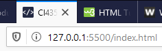
After correcting any grammatical errors I moved onto indenting my HTML to make it readable and
refactoring my CSS.
Due to my media queries I had around 300 lines of redundant code which I have now removed.
My refactored main.css is now only 129 lines, below is a preview of some of the code.
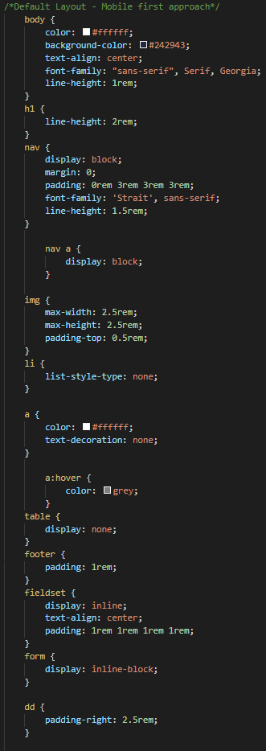
- - Setup contact page
- - Insert form
- - Add form input fields and labels.
- - Create submit button
- - Test form validation
- - Improve look of form
Firstly I opened the contact page and copied over the structure of the previously created pages to
maintain consistency.
I then inserted a form with a method of "post", this relates to the HTTP verb POST, (Mdn, 2019)
have a list of verbs for reference.
After setting up the basic submission form I created a fieldset containing two radio buttons,
allowing the user to choose whether to receive more information.
In order for the user to be able to submit the form I have added an input element to the end with
the type variable set to "submit".
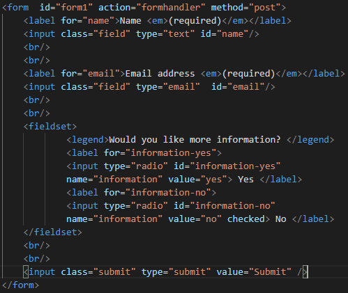
Implementing form validation is very easy with HTML5, for the input that takes the users email address I
changed the type variable to "email".
Testing the form validation required me to enter an invalid email address and see if the form
would check for errors.
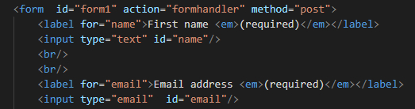
Finally to improve the look of the form I added a light grey background color to the input fields for
the users name and email.
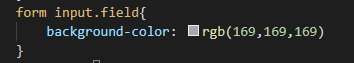
Implementing Media
Adding responsive media.
- - Making images flexible
- - Background images
- - Create a favicon
In order to make the images within the articles flexible I have set the width property to 100%.
This will preserve the resolution when loaded by different media queries.

To create a simple background image I used http://www.stripegenerator.com/.
I created a "mediarticle" class, took the current background colour of my article divs and set the
stripes to grey.
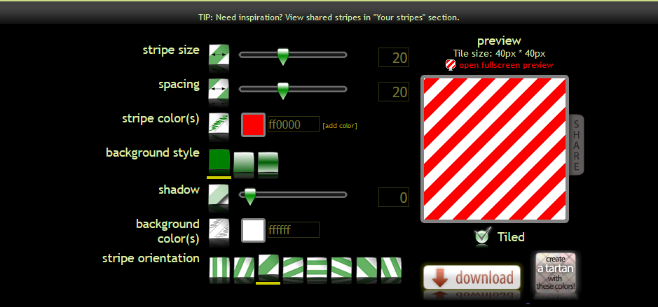
Finally I created a favicon using the site https://favicon.io/.
Choosing to generate the favicon from text allowed me to create a simple closing tag symbol.
The favicon is located on the tab for this site.
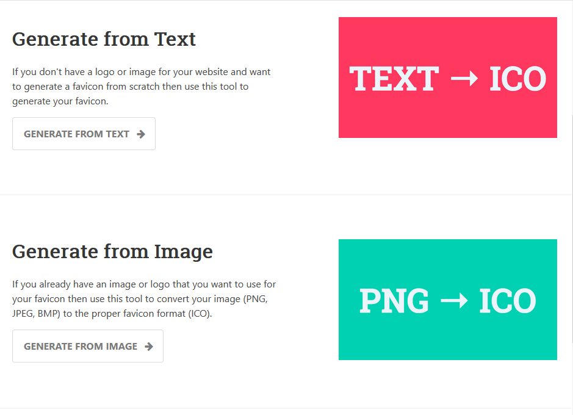
- - Set up the responsive grid
- - Style small screen layout - mobile first approach
- - Media queries - styles for different screen widths
- - Hiding elements
- - Testing responsive web pages
I started by implementing the CSS Grid to my articles and keeping the rest of the site minimal.
A wrapper is used to initiate the grid display and define the column values.
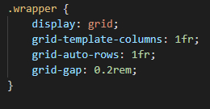
This can then be combined with media queries to determine how many columns and rows the site should
have.
While researching I found a recommendation by (Clarke, 2012) on how many media queries to setup.
This is the mobile layout as I'm starting to implement the mobile first approach.
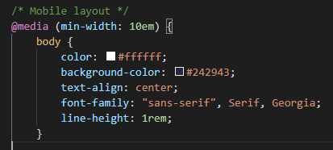
When viewing this site on a mobile the timetable will be removed due to the display value being set to
none.
This just prevents the site from becoming too crowded when viewed on a smaller device.
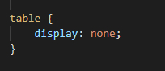
To test whether the site works well across multiple devices I used mobiletest.me.
This let me view the site on emulated devices.
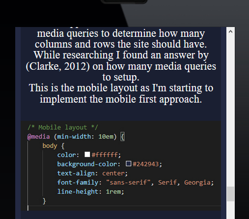
- - Apply Google fonts
- - Style paragraphs
- - Float an image & wrap text around
Here in the head section of the site I have created a link tag that includes google fonts.
This will load the font family "Strait" into my HTML file via the google API.
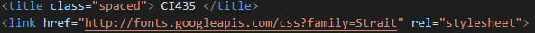
Here I have set the line height for text on this site and ensured that the text is centred.
For the article posts I have overridden this so that the text floats left as this makes them
easier to read.
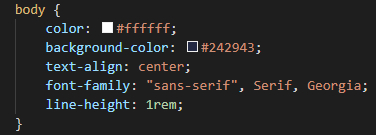
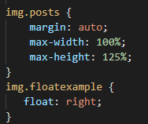
To float an image and wrap some text around it I referred to (W3 Schools, 2019).
I initially got this wrong as I had the text before the image, which meant the text wouldn't wrap.
The image on the right inherits properties from both the "posts" and "floatexample" classes.
This resulted in the footer also wrapping around the image.
To fix this I defined a footer class called "clearexample" to clear both sides of the footer.
In order to resolve the layout I added some padding to the "floatexample" class,
this prevented the image from hitting the border of the article.
- - Add normalize.css and link to webpages
- - Add my own stylesheet and link to webpages
- - Style the body & other elements
- - Specify font family
I downloaded normalize.css from (Gallagher, 2019).
then linked the stylesheet in the head of each page, along with the main.css file.
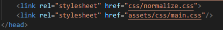
I referred to (W3schools.com. 2019) when looking for help with designing the site,
this showed me a general way to layout the site.
Below is the start of the main.css file, this stylesheet is loaded after normalise has corrected
the page.
Within the body and the nav I have defined the font family, nav will override the body font.
This is due to CSS specificity, this is "the set of rules applied to CSS selectors in order to
determine which style is applied to an element." (Bostian, 2019).
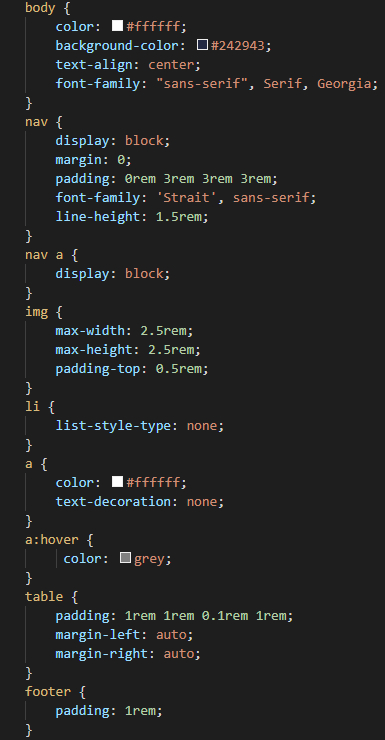
- - Defintion list
- - Quoting text
- - Make an image into a link
- - Add a table to index
The definition lists were used to define the concepts covered in this blog, that being HTML & CSS.
These defintions are located in the <blockquote> tags and are quotes from https://www.w3schools.com
To finish off the definition list I added some images under (Creativecommons.org,
2016).
In order to turn the images into links I embedded the image element within an anchor element.
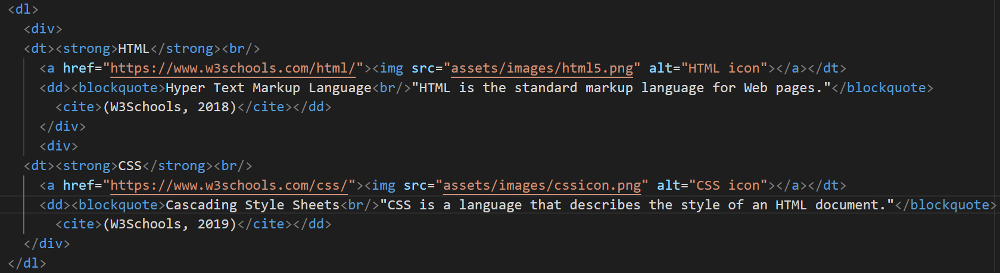
Finally I added my timetable using the table element.
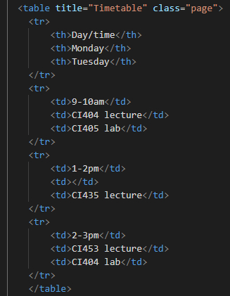
- - Create article skeleton
- - Put a list in a post
- - Add an image using the <img> tags
- - Add a publication date to the article posts
- - Create navigation within each page using named anchors
Firstly I setup an article structure consisting of a header with a title, a list and a footer with the
date embedded.
I then moved onto adding a list which was straightforward, until I ran into the problem of HTML
being interpreted within this article's content when referring to the image tag.
To circumvent this I utilised the named characters for "<" & ">" that are recognised by
HTML.
(W3.org, 2019) have a character list to reference.
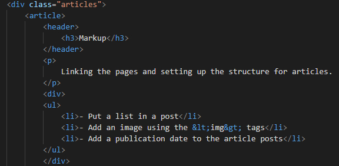
When adding an image, open an image tag and enter the path to the image file and add a descripton for
screen readers to use.
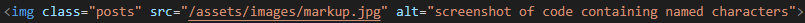
To format the publication date correctly I used the time tag along with the "datetime" variable.
Afterwards you can put the date in plain English before the closing time tag.
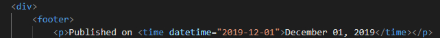
As this index page is going to contain lots of content, it would be good to have a way of going to the
top of the page without scrolling.
To do this I created an anchor with the ID of 'top', this is not visible to the user as there is
no content between the tags.
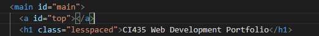
This other anchor located in the footer, is linked to the one at the top of the page allowing me to jump
to the top.
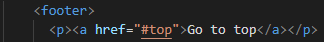
- - Set up site folder
- - Create index.html
- - Create tutorial.html
- - Set viewport scale
- - Link files in a nav for navigation
Since I do not have much experience with hosting a website I struggled to structure the directories
correctly.
This meant that my index file wasn't loaded, to fix this I removed the nested folder so index is
now located in the "public_html" directory.
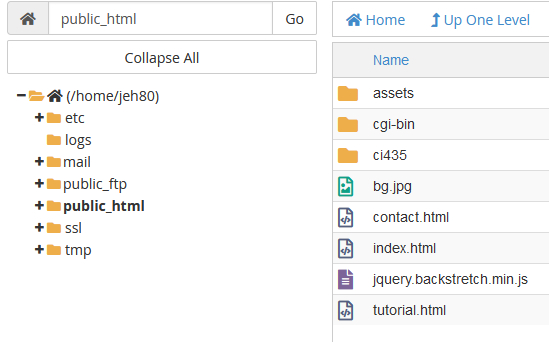
Below you can see the meta tag to set the viewport value, this means that when the browser loads the site
it will retain the correct scale in relation to the viewport.
This will serve as the 'responsive' design for now.
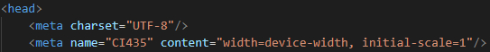
To link the files together I created a nav section within the header which has anchors to the tutorial &
contact page within the same directory.
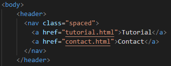